incidence2 is an R package that implements functions to compute, handle and visualise incidence data. It aims to be intuitive to use for both interactive data exploration and as part of more robust outbreak analytic pipelines.
The package is based around objects of the namesake class, incidence2. These
objects are a tibble subclass
with some additional invariants. That is, an incidence2 object must:
have one column representing the date index (this does not need to be a Date
object but must have an inherent ordering over time);
have one column representing the count variable (i.e. what is being counted) and one variable representing the associated count;
have zero or more columns representing groups;
not have duplicated rows with regards to the date, group and count variables.
To create and work with incidence2 objects we provide a number of functions:
incidence(): for the construction of incidence objects from both linelists
and pre-aggregated data sets.
regroup(): regroup incidence from different groups into one global incidence
time series.
incidence_() and regroup_(): These work similar to their aforementioned
namesakes but also add support for
tidy-select
semantics in their arguments.
plot.incidence2(): generate simple plots with reasonable defaults.
cumulate(): calculate the cumulative incidence over time.
complete_dates(): ensure every possible combination of date and groupings
is represented with a count.
keep_first(), keep_last(): keep the rows corresponding to the first (or
last) set of grouped dates (ordered by time) from an incidence2 object.
keep_peaks(); keep the rows corresponding to the maximum count value for
each grouping of an incidence2 object. A convenience wrapper around this,
first_peak() keeps returns the earliest occurring peak row.
bootstrap_incidence(); sampling (with replacement and optional randomisation)
from incidence2 objects.
estimate_peak(); estimate the peak of an epidemic curve using bootstrapped
samples of the available data.
Accessors for underlying variables: get_date_index(), get_count_variable(),
get_count_value(), get_groups(), get_count_value_name(),
get_count_variable_name(), get_date_index_name() and get_group_names().
Methods for common base R generics:
as.data.frame.incidence2()$<-.incidence2()[.incidence2()[<-.incidence2()names<-.incidence2()split.incidence2()rbind.incidence2()Methods for generics from the wider R package ecosystem, including:
mutate.incidence2()summarise.incidence2()nest.incidence2()as_tibble.incidence2()as.data.table.incidence2()Examples in the vignette utilise three different sets of data:
A synthetic linelist generated from a simulated Ebola Virus Disease (EVD) outbreak and available in the outbreaks package.
A pre-aggregated time-series of Covid cases, tests, hospitalisations, and deaths for UK regions that is included within the incidence2 package.
136 cases of influenza A H7N9 in China. Again available in the outbreaks package.
Broadly speaking, we refer to data with one row of observations (e.g. ‘Sex’, ‘Date of symptom onset’, ‘Date of Hospitalisation’) per individual as a linelist
library(incidence2)
# linelist from the simulated ebola outbreak (removing some missing entries)
ebola <- subset(outbreaks::ebola_sim_clean$linelist, !is.na(hospital))
str(ebola)
#> 'data.frame': 4373 obs. of 11 variables:
#> $ case_id : chr "d1fafd" "53371b" "f5c3d8" "0f58c4" ...
#> $ generation : int 0 1 1 2 3 3 2 3 4 3 ...
#> $ date_of_infection : Date, format: NA "2014-04-09" ...
#> $ date_of_onset : Date, format: "2014-04-07" "2014-04-15" ...
#> $ date_of_hospitalisation: Date, format: "2014-04-17" "2014-04-20" ...
#> $ date_of_outcome : Date, format: "2014-04-19" NA ...
#> $ outcome : Factor w/ 2 levels "Death","Recover": NA NA 2 2 2 1 2 1 NA 2 ...
#> $ gender : Factor w/ 2 levels "f","m": 1 2 1 1 1 1 2 2 1 1 ...
#> $ hospital : Factor w/ 5 levels "Connaught Hospital",..: 2 1 3 3 1 4 3 5 1 1 ...
#> $ lon : num -13.2 -13.2 -13.2 -13.2 -13.2 ...
#> $ lat : num 8.47 8.46 8.48 8.45 8.46 ...
To compute daily incidence we pass to incidence() our linelist data frame
as well as the name of a column in the data that we can use to index over
time. Whilst we refer to this index as the date_index there is no
restriction on it’s type, save the requirement that is has an inherent ordering.
(daily_incidence <- incidence(ebola, date_index = "date_of_onset"))
#> # incidence: 361 x 3
#> # count vars: date_of_onset
#> date_index count_variable count
#> <date> <chr> <int>
#> 1 2014-04-07 date_of_onset 1
#> 2 2014-04-15 date_of_onset 1
#> 3 2014-04-21 date_of_onset 2
#> 4 2014-04-26 date_of_onset 1
#> 5 2014-05-01 date_of_onset 2
#> 6 2014-05-03 date_of_onset 1
#> 7 2014-05-05 date_of_onset 1
#> 8 2014-05-06 date_of_onset 2
#> 9 2014-05-07 date_of_onset 2
#> 10 2014-05-08 date_of_onset 2
#> # ℹ 351 more rows
incidence2 also provides a simple plot method (see help("plot.incidence2"))
built upon ggplot2.
plot(daily_incidence)
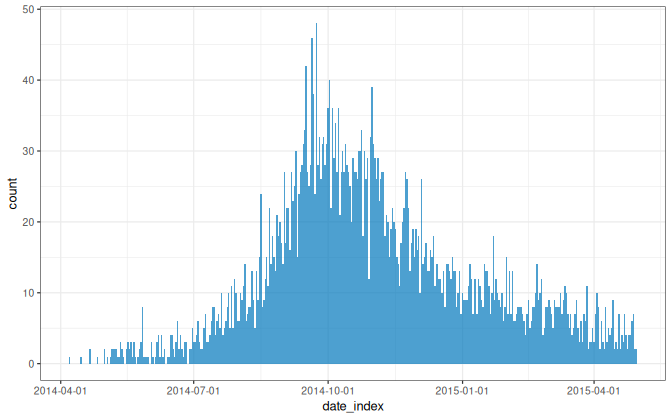
The daily data is quite noisy, so it may be worth grouping the dates prior to
calculating the incidence. One way to do this is to utilise functions from the
grates package. incidence2
depends on the grates package so all of it’s functionality is available
directly to users. Here we use the as_isoweek() function to convert the
‘date of onset’ to an isoweek (a week starting on a Monday) before proceeding
to calculate the incidence:
(weekly_incidence <-
ebola |>
mutate(date_of_onset = as_isoweek(date_of_onset)) |>
incidence(date_index = "date_of_onset"))
#> # incidence: 56 x 3
#> # count vars: date_of_onset
#> date_index count_variable count
#> <isowk> <chr> <int>
#> 1 2014-W15 date_of_onset 1
#> 2 2014-W16 date_of_onset 1
#> 3 2014-W17 date_of_onset 3
#> 4 2014-W18 date_of_onset 3
#> 5 2014-W19 date_of_onset 11
#> 6 2014-W20 date_of_onset 13
#> 7 2014-W21 date_of_onset 11
#> 8 2014-W22 date_of_onset 15
#> 9 2014-W23 date_of_onset 13
#> 10 2014-W24 date_of_onset 13
#> # ℹ 46 more rows
plot(weekly_incidence, border_colour = "white")
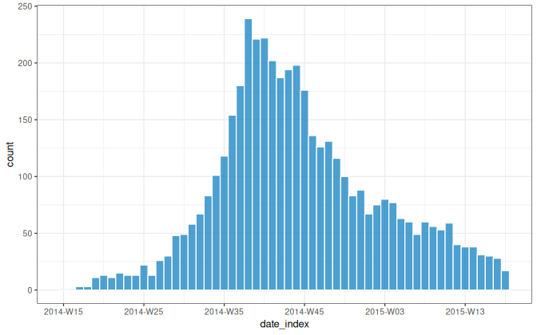
As this sort of date grouping is often required we have chosen to integrate this
within the incidence() function via the interval parameter.
interval can take any of the following values:
Date objects);grates_isoweek);grates_epiweek);grates_yearmonth);grates_yearquarter);grates_year).As an example, the following is equivalent to the weekly_incidence output above:
(dat <- incidence(ebola, date_index = "date_of_onset", interval = "isoweek"))
#> # incidence: 56 x 3
#> # count vars: date_of_onset
#> date_index count_variable count
#> <isowk> <chr> <int>
#> 1 2014-W15 date_of_onset 1
#> 2 2014-W16 date_of_onset 1
#> 3 2014-W17 date_of_onset 3
#> 4 2014-W18 date_of_onset 3
#> 5 2014-W19 date_of_onset 11
#> 6 2014-W20 date_of_onset 13
#> 7 2014-W21 date_of_onset 11
#> 8 2014-W22 date_of_onset 15
#> 9 2014-W23 date_of_onset 13
#> 10 2014-W24 date_of_onset 13
#> # ℹ 46 more rows
# check equivalent
identical(dat, weekly_incidence)
#> [1] TRUE
If we wish to aggregate by specified groups we can use the groups argument.
For instance, to compute the weekly incidence by gender:
(weekly_incidence_gender <- incidence(
ebola,
date_index = "date_of_onset",
groups = "gender",
interval = "isoweek"
))
#> # incidence: 109 x 4
#> # count vars: date_of_onset
#> # groups: gender
#> date_index gender count_variable count
#> <isowk> <fct> <chr> <int>
#> 1 2014-W15 f date_of_onset 1
#> 2 2014-W16 m date_of_onset 1
#> 3 2014-W17 f date_of_onset 2
#> 4 2014-W17 m date_of_onset 1
#> 5 2014-W18 f date_of_onset 3
#> 6 2014-W19 f date_of_onset 8
#> 7 2014-W19 m date_of_onset 3
#> 8 2014-W20 f date_of_onset 4
#> 9 2014-W20 m date_of_onset 9
#> 10 2014-W21 f date_of_onset 6
#> # ℹ 99 more rows
For grouped data, the plot method will create a faceted plot across groups unless a fill variable is specified:
plot(weekly_incidence_gender, border_colour = "white", angle = 45)
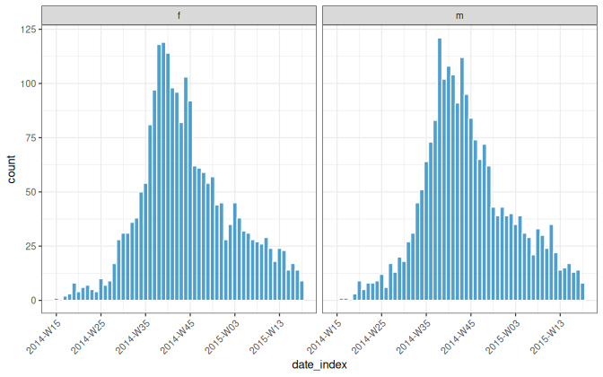
plot(weekly_incidence_gender, border_colour = "white", angle = 45, fill = "gender")
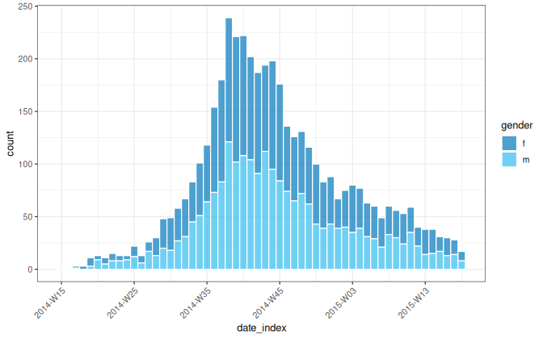
incidence() also supports multiple date inputs and allows renaming via the
use of named vectors:
(weekly_multi_dates <- incidence(
ebola,
date_index = c(
onset = "date_of_onset",
infection = "date_of_infection"
),
interval = "isoweek",
groups = "gender"
))
#> # incidence: 216 x 4
#> # count vars: onset, infection
#> # groups: gender
#> date_index gender count_variable count
#> <isowk> <fct> <chr> <int>
#> 1 2014-W15 f onset 1
#> 2 2014-W15 m infection 1
#> 3 2014-W16 f infection 1
#> 4 2014-W16 m onset 1
#> 5 2014-W17 f infection 3
#> 6 2014-W17 f onset 2
#> 7 2014-W17 m onset 1
#> 8 2014-W18 f infection 6
#> 9 2014-W18 f onset 3
#> 10 2014-W19 f infection 6
#> # ℹ 206 more rows
For a quick, high-level, overview of grouped data we can use the summary() method:
summary(weekly_multi_dates)
#> From: 2014-W15
#> To: 2015-W18
#> Groups: gender
#>
#> Total observations:
#> # A data frame: 4 × 3
#> gender count_variable count
#> <fct> <chr> <int>
#> 1 f onset 2195
#> 2 m infection 1390
#> 3 f infection 1408
#> 4 m onset 2178
When multiple date indices are given, they are used for rows of the resultant plot, unless the resultant variable is used to fill:
plot(weekly_multi_dates, angle = 45, border_colour = "white")
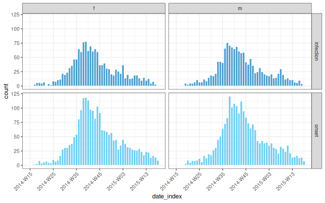
plot(weekly_multi_dates, angle = 45, border_colour = "white", fill = "count_variable")
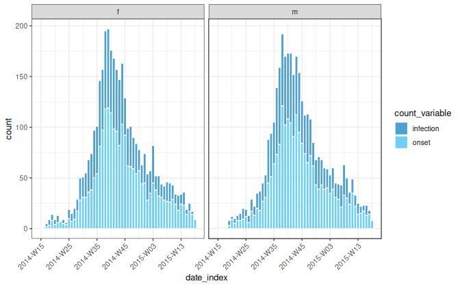
In terms of this package, pre-aggregated data, is data where we have a single column representing time and associated counts linked to those times (still optionally split by characteristics). The included Covid data set is in this wide format with multiple count values given for each day.
covid <- subset(
covidregionaldataUK,
!region %in% c("England", "Scotland", "Northern Ireland", "Wales")
)
str(covid)
#> 'data.frame': 4410 obs. of 13 variables:
#> $ date : Date, format: "2020-01-30" "2020-01-30" ...
#> $ region : chr "East Midlands" "East of England" "London" "North East" ...
#> $ region_code : chr "E12000004" "E12000006" "E12000007" "E12000001" ...
#> $ cases_new : num NA NA NA NA NA NA NA NA 1 NA ...
#> $ cases_total : num NA NA NA NA NA NA NA NA 1 NA ...
#> $ deaths_new : num NA NA NA NA NA NA NA NA NA NA ...
#> $ deaths_total : num NA NA NA NA NA NA NA NA NA NA ...
#> $ recovered_new : num NA NA NA NA NA NA NA NA NA NA ...
#> $ recovered_total: num NA NA NA NA NA NA NA NA NA NA ...
#> $ hosp_new : num NA NA NA NA NA NA NA NA NA NA ...
#> $ hosp_total : num NA NA NA NA NA NA NA NA NA NA ...
#> $ tested_new : num NA NA NA NA NA NA NA NA NA NA ...
#> $ tested_total : num NA NA NA NA NA NA NA NA NA NA ...
Like with our linelist data, incidence() requires us to specify a date_index
column and optionally our groups and/or interval. In addition we must now
also provide the counts variable(s) that we are interested in.
Before continuing, take note of the missing values in output above. Where
these occur in one of the count variables, incidence() warns users:
monthly_covid <- incidence(
covid,
date_index = "date",
groups = "region",
counts = "cases_new",
interval = "yearmonth"
)
#> `cases_new` contains NA values. Consider imputing these and calling `incidence()` again.
monthly_covid
#> # incidence: 162 x 4
#> # count vars: cases_new
#> # groups: region
#> date_index region count_variable count
#> <yrmon> <chr> <fct> <dbl>
#> 1 2020-Jan East Midlands cases_new NA
#> 2 2020-Jan East of England cases_new NA
#> 3 2020-Jan London cases_new NA
#> 4 2020-Jan North East cases_new NA
#> 5 2020-Jan North West cases_new NA
#> 6 2020-Jan South East cases_new NA
#> 7 2020-Jan South West cases_new NA
#> 8 2020-Jan West Midlands cases_new NA
#> 9 2020-Jan Yorkshire and The Humber cases_new 1
#> 10 2020-Feb East Midlands cases_new NA
#> # ℹ 152 more rows
Whilst we could have let incidence() ignore missing values (equivalent to
setting sum(..., na.rm=TRUE)), we prefer that users make an explicit choice
on how these should (or should not) be imputed. For example, to treat missing
values as zero counts we can simply replace them in the data prior to calling
incidence():
(monthly_covid <-
covid |>
tidyr::replace_na(list(cases_new = 0)) |>
incidence(
date_index = "date",
groups = "region",
counts = "cases_new",
interval = "yearmonth"
))
#> # incidence: 162 x 4
#> # count vars: cases_new
#> # groups: region
#> date_index region count_variable count
#> <yrmon> <chr> <fct> <dbl>
#> 1 2020-Jan East Midlands cases_new 0
#> 2 2020-Jan East of England cases_new 0
#> 3 2020-Jan London cases_new 0
#> 4 2020-Jan North East cases_new 0
#> 5 2020-Jan North West cases_new 0
#> 6 2020-Jan South East cases_new 0
#> 7 2020-Jan South West cases_new 0
#> 8 2020-Jan West Midlands cases_new 0
#> 9 2020-Jan Yorkshire and The Humber cases_new 1
#> 10 2020-Feb East Midlands cases_new 4
#> # ℹ 152 more rows
plot(monthly_covid, nrow = 3, angle = 45, border_colour = "white")
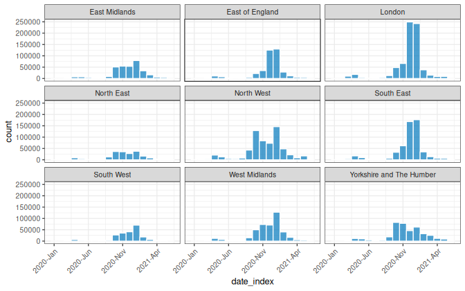
For small datasets it is convention of EPIET to display individual cases as
rectangles. We can do this by setting show_cases = TRUE in the call to
plot() which will display each case as an individual square with a white
border.
dat <- ebola[160:180, ]
(small <- incidence(
dat,
date_index = "date_of_onset",
date_names_to = "date"
))
#> # incidence: 9 x 3
#> # count vars: date_of_onset
#> date count_variable count
#> <date> <chr> <int>
#> 1 2014-07-08 date_of_onset 2
#> 2 2014-07-09 date_of_onset 2
#> 3 2014-07-10 date_of_onset 1
#> 4 2014-07-11 date_of_onset 2
#> 5 2014-07-12 date_of_onset 3
#> 6 2014-07-13 date_of_onset 4
#> 7 2014-07-14 date_of_onset 5
#> 8 2014-07-15 date_of_onset 1
#> 9 2014-07-16 date_of_onset 1
plot(small, show_cases = TRUE, angle = 45, n_breaks = 10)
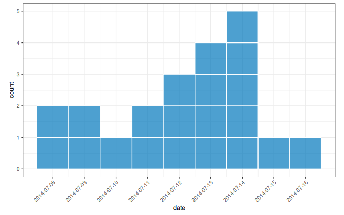
(small_gender <- incidence(
dat,
date_index = "date_of_onset",
groups = "gender",
date_names_to = "date"
))
#> # incidence: 13 x 4
#> # count vars: date_of_onset
#> # groups: gender
#> date gender count_variable count
#> <date> <fct> <chr> <int>
#> 1 2014-07-08 m date_of_onset 2
#> 2 2014-07-09 f date_of_onset 1
#> 3 2014-07-09 m date_of_onset 1
#> 4 2014-07-10 f date_of_onset 1
#> 5 2014-07-11 f date_of_onset 1
#> 6 2014-07-11 m date_of_onset 1
#> 7 2014-07-12 f date_of_onset 3
#> 8 2014-07-13 f date_of_onset 3
#> 9 2014-07-13 m date_of_onset 1
#> 10 2014-07-14 f date_of_onset 1
#> 11 2014-07-14 m date_of_onset 4
#> 12 2014-07-15 f date_of_onset 1
#> 13 2014-07-16 f date_of_onset 1
plot(small_gender, show_cases = TRUE, angle = 45, n_breaks = 10, fill = "gender")
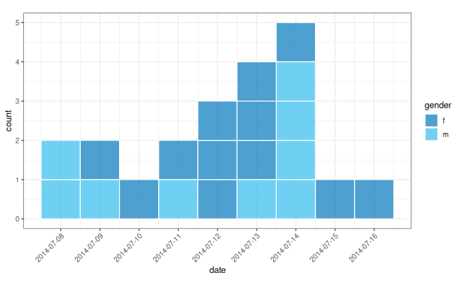
With the 2.0.0 release of incidence2 I removed the NSE support from the
incidence() function. At the time, my thinking was that this made the
functions harder to use programmatically and quoting out inputs was not too
onerous. I wanted The 2.0.0 series to be the last major release and thought the
change was sensible. Whilst I still believe it is tricky to use NSE
programmatically, I now view incidence2 as a more interactive package and there
is a definite elegance to NSE in this situation. To this end, the 2.3.0, release
added functions incidence_() and regroup_()which both support
tidy-select
semantics in their column arguments (i.e. date_index, groups and counts).
To avoid any breaking changes, I chose not to change the existing functions
instead using the post-fix underscore to distinguish functionality. Whilst this
is not aesthetically pleasing it did ensure no existing code broke. With
hindsight, whilst I do like having a separate interface for programmatic use,
I wish I could swap the function names around and have incidence() as the
tidy-select supporting interactive interface and incidence_() for programmatic
use. C’est la vie.
The following sections utilise the aforementioned tidy-select semantics and, hence, the post-fix version of the incidence function.
On top of the incidence constructor function and the basic plotting, printing and summary we provide a number of other useful functions and integrations for working with incidence2 objects.
regroup()If you’ve created a grouped incidence object but now want to change the internal
grouping, you can regroup() to the desired aggregation:
# generate an incidence object with 3 groups
(x <- incidence_(
ebola,
date_index = date_of_onset,
groups = c(gender, hospital, outcome),
interval = "isoweek"
))
#> # incidence: 1,167 x 6
#> # count vars: date_of_onset
#> # groups: gender, hospital, outcome
#> date_index gender hospital outcome count_variable count
#> <isowk> <fct> <fct> <fct> <chr> <int>
#> 1 2014-W15 f Military Hospital <NA> date_of_onset 1
#> 2 2014-W16 m Connaught Hospital <NA> date_of_onset 1
#> 3 2014-W17 f other Recover date_of_onset 2
#> 4 2014-W17 m other Recover date_of_onset 1
#> 5 2014-W18 f Connaught Hospital Recover date_of_onset 1
#> 6 2014-W18 f Princess Christian Maternity … Death date_of_onset 1
#> 7 2014-W18 f Rokupa Hospital Recover date_of_onset 1
#> 8 2014-W19 f Connaught Hospital <NA> date_of_onset 1
#> 9 2014-W19 f Connaught Hospital Recover date_of_onset 1
#> 10 2014-W19 f Military Hospital <NA> date_of_onset 2
#> # ℹ 1,157 more rows
# regroup to just two groups
regroup_(x, c(gender, outcome))
#> # incidence: 314 x 5
#> # count vars: date_of_onset
#> # groups: gender, outcome
#> date_index gender outcome count_variable count
#> <isowk> <fct> <fct> <chr> <int>
#> 1 2014-W15 f <NA> date_of_onset 1
#> 2 2014-W16 m <NA> date_of_onset 1
#> 3 2014-W17 f Recover date_of_onset 2
#> 4 2014-W17 m Recover date_of_onset 1
#> 5 2014-W18 f Death date_of_onset 1
#> 6 2014-W18 f Recover date_of_onset 2
#> 7 2014-W19 f <NA> date_of_onset 4
#> 8 2014-W19 f Death date_of_onset 1
#> 9 2014-W19 f Recover date_of_onset 3
#> 10 2014-W19 m <NA> date_of_onset 1
#> # ℹ 304 more rows
# standard (non-tidy-select) version
regroup(x, c("gender", "outcome"))
#> # incidence: 314 x 5
#> # count vars: date_of_onset
#> # groups: gender, outcome
#> date_index gender outcome count_variable count
#> <isowk> <fct> <fct> <chr> <int>
#> 1 2014-W15 f <NA> date_of_onset 1
#> 2 2014-W16 m <NA> date_of_onset 1
#> 3 2014-W17 f Recover date_of_onset 2
#> 4 2014-W17 m Recover date_of_onset 1
#> 5 2014-W18 f Death date_of_onset 1
#> 6 2014-W18 f Recover date_of_onset 2
#> 7 2014-W19 f <NA> date_of_onset 4
#> 8 2014-W19 f Death date_of_onset 1
#> 9 2014-W19 f Recover date_of_onset 3
#> 10 2014-W19 m <NA> date_of_onset 1
#> # ℹ 304 more rows
# drop all groups
regroup(x)
#> # incidence: 56 x 3
#> # count vars: date_of_onset
#> date_index count_variable count
#> <isowk> <chr> <int>
#> 1 2014-W15 date_of_onset 1
#> 2 2014-W16 date_of_onset 1
#> 3 2014-W17 date_of_onset 3
#> 4 2014-W18 date_of_onset 3
#> 5 2014-W19 date_of_onset 11
#> 6 2014-W20 date_of_onset 13
#> 7 2014-W21 date_of_onset 11
#> 8 2014-W22 date_of_onset 15
#> 9 2014-W23 date_of_onset 13
#> 10 2014-W24 date_of_onset 13
#> # ℹ 46 more rows
complete_dates()Sometimes your incidence data does not span consecutive units of time, or
different groupings may cover different periods. To this end we provide a
complete_dates() function which ensures a complete and identical range of
dates are given counts (by default filling with a 0 value).
dat <- data.frame(
dates = as.Date(c("2020-01-01", "2020-01-04")),
gender = c("male", "female")
)
(incidence <- incidence_(dat, date_index = dates, groups = gender))
#> # incidence: 2 x 4
#> # count vars: dates
#> # groups: gender
#> date_index gender count_variable count
#> <date> <chr> <chr> <int>
#> 1 2020-01-01 male dates 1
#> 2 2020-01-04 female dates 1
complete_dates(incidence)
#> # incidence: 8 x 4
#> # count vars: dates
#> # groups: gender
#> date_index gender count_variable count
#> <date> <chr> <chr> <int>
#> 1 2020-01-01 female dates 0
#> 2 2020-01-01 male dates 1
#> 3 2020-01-02 female dates 0
#> 4 2020-01-02 male dates 0
#> 5 2020-01-03 female dates 0
#> 6 2020-01-03 male dates 0
#> 7 2020-01-04 female dates 1
#> 8 2020-01-04 male dates 0
keep_first(), keep_last() and keep_peaks()Once your data is grouped by date, you can select the first or last few entries
based on a particular date grouping using keep_first() and keep_last():
weekly_incidence <- incidence_(
ebola,
date_index = date_of_onset,
groups = hospital,
interval = "isoweek"
)
keep_first(weekly_incidence, 3)
#> # incidence: 15 x 4
#> # count vars: date_of_onset
#> # groups: hospital
#> date_index hospital count_variable count
#> <isowk> <fct> <chr> <int>
#> 1 2014-W15 Connaught Hospital date_of_onset 0
#> 2 2014-W16 Connaught Hospital date_of_onset 1
#> 3 2014-W17 Connaught Hospital date_of_onset 0
#> 4 2014-W15 Military Hospital date_of_onset 1
#> 5 2014-W16 Military Hospital date_of_onset 0
#> 6 2014-W17 Military Hospital date_of_onset 0
#> 7 2014-W15 other date_of_onset 0
#> 8 2014-W16 other date_of_onset 0
#> 9 2014-W17 other date_of_onset 3
#> 10 2014-W15 Princess Christian Maternity Hospital (PCMH) date_of_onset 0
#> 11 2014-W16 Princess Christian Maternity Hospital (PCMH) date_of_onset 0
#> 12 2014-W17 Princess Christian Maternity Hospital (PCMH) date_of_onset 0
#> 13 2014-W15 Rokupa Hospital date_of_onset 0
#> 14 2014-W16 Rokupa Hospital date_of_onset 0
#> 15 2014-W17 Rokupa Hospital date_of_onset 0
keep_last(weekly_incidence, 3)
#> # incidence: 15 x 4
#> # count vars: date_of_onset
#> # groups: hospital
#> date_index hospital count_variable count
#> <isowk> <fct> <chr> <int>
#> 1 2015-W16 Connaught Hospital date_of_onset 14
#> 2 2015-W17 Connaught Hospital date_of_onset 10
#> 3 2015-W18 Connaught Hospital date_of_onset 9
#> 4 2015-W16 Military Hospital date_of_onset 3
#> 5 2015-W17 Military Hospital date_of_onset 6
#> 6 2015-W18 Military Hospital date_of_onset 2
#> 7 2015-W16 other date_of_onset 9
#> 8 2015-W17 other date_of_onset 3
#> 9 2015-W18 other date_of_onset 2
#> 10 2015-W16 Princess Christian Maternity Hospital (PCMH) date_of_onset 1
#> 11 2015-W17 Princess Christian Maternity Hospital (PCMH) date_of_onset 3
#> 12 2015-W18 Princess Christian Maternity Hospital (PCMH) date_of_onset 2
#> 13 2015-W16 Rokupa Hospital date_of_onset 3
#> 14 2015-W17 Rokupa Hospital date_of_onset 6
#> 15 2015-W18 Rokupa Hospital date_of_onset 2
Similarly keep_peaks()returns the rows corresponding to the maximum count
value for each grouping of an incidence2 object:
keep_peaks(weekly_incidence)
#> # incidence: 5 x 4
#> # count vars: date_of_onset
#> # groups: hospital
#> date_index hospital count_variable count
#> <isowk> <fct> <chr> <int>
#> 1 2014-W39 Connaught Hospital date_of_onset 100
#> 2 2014-W38 Military Hospital date_of_onset 54
#> 3 2014-W42 other date_of_onset 52
#> 4 2014-W38 Princess Christian Maternity Hospital (PCMH) date_of_onset 25
#> 5 2014-W42 Rokupa Hospital date_of_onset 28
estimate_peak() returns an estimate of the peak of an epidemic curve using
bootstrapped samples of the available data. It is a wrapper around two functions:
first_peak(), that returns the earliest
occurring peak row per group; and,bootstrap_incidence() which samples (with replacement and optional
randomisation) from incidence2 objects.Note that the bootstrapping approach used for estimating the peak time makes the following assumptions:
influenza <- incidence_(
outbreaks::fluH7N9_china_2013,
date_index = date_of_onset,
groups = province
)
# across provinces (we suspend progress bar for markdown)
estimate_peak(influenza, progress = FALSE) |>
select(-count_variable)
#> # A tibble: 13 × 7
#> province observed_peak observed_count bootstrap_peaks lower_ci median
#> <fct> <date> <int> <list> <date> <date>
#> 1 Anhui 2013-03-09 1 <df [100 × 1]> 2013-03-09 2013-03-28
#> 2 Beijing 2013-04-11 1 <df [100 × 1]> 2013-02-19 2013-04-11
#> 3 Fujian 2013-04-17 1 <df [100 × 1]> 2013-04-17 2013-04-21
#> 4 Guangdong 2013-07-27 1 <df [100 × 1]> 2013-02-19 2013-07-27
#> 5 Hebei 2013-07-10 1 <df [100 × 1]> 2013-02-19 2013-07-10
#> 6 Henan 2013-04-06 1 <df [100 × 1]> 2013-02-19 2013-04-08
#> 7 Hunan 2013-04-14 1 <df [100 × 1]> 2013-02-19 2013-04-14
#> 8 Jiangsu 2013-03-19 2 <df [100 × 1]> 2013-03-08 2013-03-20
#> 9 Jiangxi 2013-04-15 1 <df [100 × 1]> 2013-04-15 2013-04-19
#> 10 Shandong 2013-04-16 1 <df [100 × 1]> 2013-02-19 2013-04-16
#> 11 Shanghai 2013-04-01 4 <df [100 × 1]> 2013-03-17 2013-04-01
#> 12 Taiwan 2013-04-12 1 <df [100 × 1]> 2013-02-19 2013-04-12
#> 13 Zhejiang 2013-04-06 5 <df [100 × 1]> 2013-03-29 2013-04-10
#> # ℹ 1 more variable: upper_ci <date>
# regrouping for overall peak
plot(regroup(influenza))
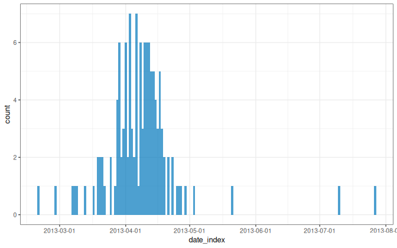
estimate_peak(regroup(influenza), progress = FALSE) |>
select(-count_variable)
#> # A tibble: 1 × 6
#> observed_peak observed_count bootstrap_peaks lower_ci median upper_ci
#> <date> <int> <list> <date> <date> <date>
#> 1 2013-04-03 7 <df [100 × 1]> 2013-03-29 2013-04-06 2013-04-17
# return the first peak of the grouped and ungrouped data
first_peak(influenza)
#> # incidence: 13 x 4
#> # count vars: date_of_onset
#> # groups: province
#> date_index province count_variable count
#> <date> <fct> <chr> <int>
#> 1 2013-03-09 Anhui date_of_onset 1
#> 2 2013-04-11 Beijing date_of_onset 1
#> 3 2013-04-17 Fujian date_of_onset 1
#> 4 2013-07-27 Guangdong date_of_onset 1
#> 5 2013-07-10 Hebei date_of_onset 1
#> 6 2013-04-06 Henan date_of_onset 1
#> 7 2013-04-14 Hunan date_of_onset 1
#> 8 2013-03-19 Jiangsu date_of_onset 2
#> 9 2013-04-15 Jiangxi date_of_onset 1
#> 10 2013-04-16 Shandong date_of_onset 1
#> 11 2013-04-01 Shanghai date_of_onset 4
#> 12 2013-04-12 Taiwan date_of_onset 1
#> 13 2013-04-06 Zhejiang date_of_onset 5
first_peak(regroup(influenza))
#> # incidence: 1 x 3
#> # count vars: date_of_onset
#> date_index count_variable count
#> <date> <chr> <int>
#> 1 2013-04-03 date_of_onset 7
# bootstrap a single sample
bootstrap_incidence(influenza)
#> # incidence: 84 x 4
#> # count vars: date_of_onset
#> # groups: province
#> date_index province count_variable count
#> * <date> <fct> <chr> <int>
#> 1 2013-02-19 Shanghai date_of_onset 1
#> 2 2013-02-27 Shanghai date_of_onset 1
#> 3 2013-03-07 Zhejiang date_of_onset 0
#> 4 2013-03-08 Jiangsu date_of_onset 0
#> 5 2013-03-09 Anhui date_of_onset 1
#> 6 2013-03-13 Zhejiang date_of_onset 0
#> 7 2013-03-17 Shanghai date_of_onset 1
#> 8 2013-03-19 Jiangsu date_of_onset 1
#> 9 2013-03-20 Jiangsu date_of_onset 3
#> 10 2013-03-21 Jiangsu date_of_onset 1
#> # ℹ 74 more rows
cumulate()You can use cumulate() to easily generate cumulative incidences:
(y <- cumulate(weekly_incidence))
#> # incidence: 261 x 4
#> # count vars: date_of_onset
#> # groups: hospital
#> date_index hospital count_variable cumulative_count
#> * <isowk> <fct> <chr> <int>
#> 1 2014-W16 Connaught Hospital date_of_onset 1
#> 2 2014-W18 Connaught Hospital date_of_onset 2
#> 3 2014-W19 Connaught Hospital date_of_onset 5
#> 4 2014-W20 Connaught Hospital date_of_onset 7
#> 5 2014-W21 Connaught Hospital date_of_onset 12
#> 6 2014-W22 Connaught Hospital date_of_onset 16
#> 7 2014-W23 Connaught Hospital date_of_onset 22
#> 8 2014-W24 Connaught Hospital date_of_onset 28
#> 9 2014-W25 Connaught Hospital date_of_onset 40
#> 10 2014-W26 Connaught Hospital date_of_onset 48
#> # ℹ 251 more rows
plot(y, angle = 45, nrow = 3)
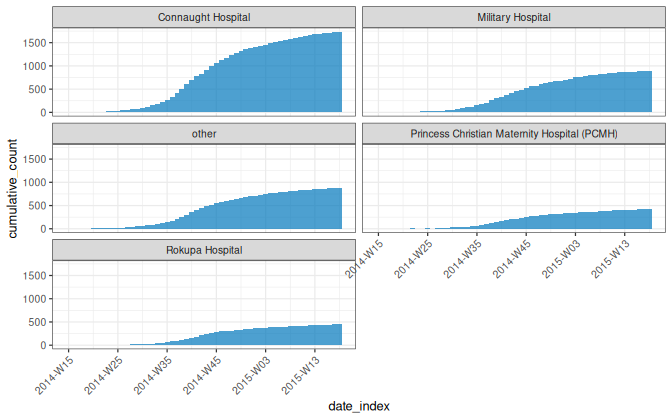
The benefit incidence2 brings is not in the functionality it provides (which is predominantly wrapping around the functionality of other packages) but in the guarantees incidence2 objects give to a user about the underlying object structure and invariants that must hold.
To make these objects easier to build upon we give sensible behaviour when the
invariants are broken, an interface to access the variables underlying the
incidence2 object and methods, for popular group-aware generics, that
implicitly utilise the underlying grouping structure.
As mentioned at the beginning of the vignetted, by definition, incidence2
objects must:
have one column representing the date index (this does not need to be a Date
object but must have an inherent ordering over time);
have one column representing the count variable (i.e. what is being counted) and one variable representing the associated count;
have zero or more columns representing groups;
not have duplicated rows with regards to the date, group and count variables.
Due to these requirements it is important that these objects preserve (or drop)
their structure appropriately under the range of different operations that can
be applied to data frames. By this we mean that if an operation is applied to an
incidence2 object then as long as the invariants of the object are preserved
(i.e. required columns and uniqueness of rows) then the object will retain it’s
incidence class. If the invariants are not preserved then a tibble will be
returned instead.
# create a weekly incidence object
weekly_incidence <- incidence_(
ebola,
date_index = date_of_onset,
groups = c(gender, hospital),
interval = "isoweek"
)
# filtering preserves class
weekly_incidence |>
subset(gender == "f" & hospital == "Rokupa Hospital") |>
class()
#> [1] "incidence2" "tbl_df" "tbl" "data.frame"
class(weekly_incidence[c(1L, 3L, 5L), ])
#> [1] "incidence2" "tbl_df" "tbl" "data.frame"
# Adding columns preserve class
weekly_incidence$future <- weekly_incidence$date_index + 999L
class(weekly_incidence)
#> [1] "incidence2" "tbl_df" "tbl" "data.frame"
weekly_incidence |>
mutate(past = date_index - 999L) |>
class()
#> [1] "incidence2" "tbl_df" "tbl" "data.frame"
# rename preserve class
names(weekly_incidence)[names(weekly_incidence) == "date_index"] <- "isoweek"
str(weekly_incidence)
#> incidnc2 [496 × 6] (S3: incidence2/tbl_df/tbl/data.frame)
#> $ isoweek : 'grates_isoweek' int [1:496] 2014-W15 2014-W16 2014-W17 2014-W17 ...
#> $ gender : Factor w/ 2 levels "f","m": 1 2 1 2 1 1 1 1 1 1 ...
#> $ hospital : Factor w/ 5 levels "Connaught Hospital",..: 2 1 3 3 1 4 5 1 2 4 ...
#> $ count_variable: chr [1:496] "date_of_onset" "date_of_onset" "date_of_onset" "date_of_onset" ...
#> $ count : int [1:496] 1 1 2 1 1 1 1 2 5 1 ...
#> $ future : 'grates_isoweek' int [1:496] 2033-W22 2033-W23 2033-W24 2033-W24 ...
#> - attr(*, "date_index")= chr "isoweek"
#> - attr(*, "count_variable")= chr "count_variable"
#> - attr(*, "count_value")= chr "count"
#> - attr(*, "groups")= chr [1:2] "gender" "hospital"
# select returns a tibble unless all date, count and group variables are
# preserved in the output
str(weekly_incidence[, -1L])
#> tibble [496 × 5] (S3: tbl_df/tbl/data.frame)
#> $ gender : Factor w/ 2 levels "f","m": 1 2 1 2 1 1 1 1 1 1 ...
#> $ hospital : Factor w/ 5 levels "Connaught Hospital",..: 2 1 3 3 1 4 5 1 2 4 ...
#> $ count_variable: chr [1:496] "date_of_onset" "date_of_onset" "date_of_onset" "date_of_onset" ...
#> $ count : int [1:496] 1 1 2 1 1 1 1 2 5 1 ...
#> $ future : 'grates_isoweek' int [1:496] 2033-W22 2033-W23 2033-W24 2033-W24 ...
str(weekly_incidence[, -6L])
#> incidnc2 [496 × 5] (S3: incidence2/tbl_df/tbl/data.frame)
#> $ isoweek : 'grates_isoweek' int [1:496] 2014-W15 2014-W16 2014-W17 2014-W17 ...
#> $ gender : Factor w/ 2 levels "f","m": 1 2 1 2 1 1 1 1 1 1 ...
#> $ hospital : Factor w/ 5 levels "Connaught Hospital",..: 2 1 3 3 1 4 5 1 2 4 ...
#> $ count_variable: chr [1:496] "date_of_onset" "date_of_onset" "date_of_onset" "date_of_onset" ...
#> $ count : int [1:496] 1 1 2 1 1 1 1 2 5 1 ...
#> - attr(*, "date_index")= chr "isoweek"
#> - attr(*, "count_variable")= chr "count_variable"
#> - attr(*, "count_value")= chr "count"
#> - attr(*, "groups")= chr [1:2] "gender" "hospital"
# duplicating rows will drop the class but only if duplicate rows
class(rbind(weekly_incidence, weekly_incidence))
#> [1] "tbl_df" "tbl" "data.frame"
class(rbind(weekly_incidence[1:5, ], weekly_incidence[6:10, ]))
#> [1] "incidence2" "tbl_df" "tbl" "data.frame"
We provide multiple accessors to easily access information about an
incidence2 object’s structure:
# the name of the date_index variable of x
get_date_index_name(weekly_incidence)
#> [1] "isoweek"
# alias for `get_date_index_name()`
get_dates_name(weekly_incidence)
#> [1] "isoweek"
# the name of the count variable of x
get_count_variable_name(weekly_incidence)
#> [1] "count_variable"
# the name of the count value of x
get_count_value_name(weekly_incidence)
#> [1] "count"
# the name(s) of the group variable(s) of x
get_group_names(weekly_incidence)
#> [1] "gender" "hospital"
# the date_index variable of x
str(get_date_index(weekly_incidence))
#> 'grates_isoweek' int [1:496] 2014-W15 2014-W16 2014-W17 2014-W17 ...
# alias for get_date_index
str(get_dates(weekly_incidence))
#> 'grates_isoweek' int [1:496] 2014-W15 2014-W16 2014-W17 2014-W17 ...
# the count variable of x
str(get_count_variable(weekly_incidence))
#> chr [1:496] "date_of_onset" "date_of_onset" "date_of_onset" ...
# the count value of x
str(get_count_value(weekly_incidence))
#> int [1:496] 1 1 2 1 1 1 1 2 5 1 ...
# list of the group variable(s) of x
str(get_groups(weekly_incidence))
#> List of 2
#> $ gender : Factor w/ 2 levels "f","m": 1 2 1 2 1 1 1 1 1 1 ...
#> $ hospital: Factor w/ 5 levels "Connaught Hospital",..: 2 1 3 3 1 4 5 1 2 4 ...
incidence2 provides methods for popular group-aware generics from both base R and the wider package ecosystem:
When called on incidence2 objects, these methods will utilise the underlying grouping structure without the user needing to explicitly state what it is. This makes it very easy to utilise in analysis pipelines.
# first twenty weeks of the ebola data set across hospitals
dat <- incidence_(ebola, date_of_onset, groups = hospital, interval = "isoweek")
dat <- keep_first(dat, 20L)
# fit a poisson model to the grouped data
(fitted <-
dat |>
nest(.key = "data") |>
mutate(
model = lapply(
data,
function(x) glm(count ~ date_index, data = x, family = poisson)
)
))
#> # A tibble: 5 × 4
#> count_variable hospital data model
#> <chr> <fct> <list> <list>
#> 1 date_of_onset Connaught Hospital <tibble> <glm>
#> 2 date_of_onset Military Hospital <tibble> <glm>
#> 3 date_of_onset other <tibble> <glm>
#> 4 date_of_onset Princess Christian Maternity Hospital (PCMH) <tibble> <glm>
#> 5 date_of_onset Rokupa Hospital <tibble> <glm>
# Add confidence intervals to the result
(intervals <-
fitted |>
mutate(result = Map(
function(data, model) {
data |>
ciTools::add_ci(
model,
alpha = 0.05,
names = c("lower_ci", "upper_ci")
) |>
as_tibble()
},
data,
model
)) |>
select(hospital, result) |>
unnest(result))
#> # A tibble: 100 × 6
#> hospital date_index count pred lower_ci upper_ci
#> <fct> <isowk> <int> <dbl> <dbl> <dbl>
#> 1 Connaught Hospital 2014-W15 0 0.968 0.599 1.56
#> 2 Connaught Hospital 2014-W16 1 1.18 0.751 1.85
#> 3 Connaught Hospital 2014-W17 0 1.44 0.942 2.19
#> 4 Connaught Hospital 2014-W18 1 1.75 1.18 2.58
#> 5 Connaught Hospital 2014-W19 3 2.13 1.48 3.06
#> 6 Connaught Hospital 2014-W20 2 2.59 1.86 3.61
#> 7 Connaught Hospital 2014-W21 5 3.16 2.33 4.28
#> 8 Connaught Hospital 2014-W22 4 3.84 2.91 5.07
#> 9 Connaught Hospital 2014-W23 6 4.68 3.65 6.00
#> 10 Connaught Hospital 2014-W24 6 5.70 4.56 7.12
#> # ℹ 90 more rows
# plot
plot(dat, angle = 45) +
ggplot2::geom_line(
ggplot2::aes(date_index, y = pred),
data = intervals,
inherit.aes = FALSE
) +
ggplot2::geom_ribbon(
ggplot2::aes(date_index, ymin = lower_ci, ymax = upper_ci),
alpha = 0.2,
data = intervals,
inherit.aes = FALSE,
fill = "#BBB67E"
)
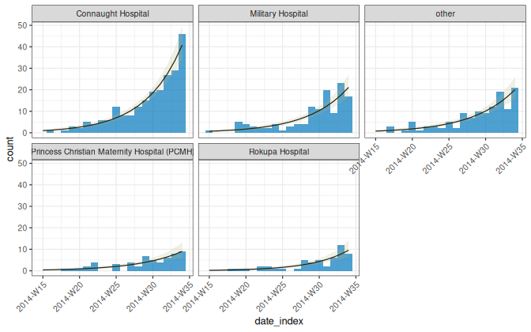
weekly_incidence |>
regroup_(hospital) |>
mutate(rolling_average = data.table::frollmean(count, n = 3L, align = "right")) |>
plot(border_colour = "white", angle = 45) +
ggplot2::geom_line(ggplot2::aes(x = date_index, y = rolling_average))
#> Removed 10 rows containing missing values or values outside the scale range (`geom_line()`).
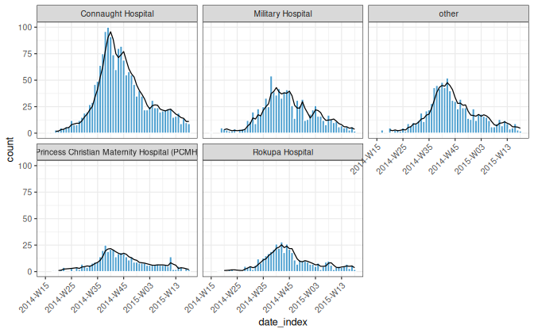